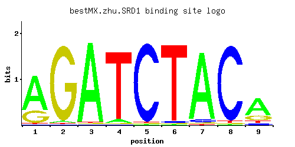

SRD1
YCR018C
Protein involved in the processing of pre-rRNA to mature rRNA; contains a C2/C2 zinc finger motif; srd1 mutation suppresses defects caused by the rrp1-1 mutation
Best-performing DNA-binding model.

View and copy the recommended matrices ↘
A | 0.72 0.02 0.97 0.05 0.01 0.01 0.93 0.01 0.65 C | 0.01 0.01 0.01 0.01 0.97 0.02 0.04 0.96 0.08 G | 0.26 0.96 0.01 0.01 0.01 0.01 0.02 0.01 0.19 T | 0.01 0.01 0.01 0.93 0.01 0.96 0.01 0.02 0.08
A | 72 2 97 5 1 1 93 1 65 C | 1 1 1 1 97 2 4 96 8 G | 26 96 1 1 1 1 2 1 19 T | 1 1 1 93 1 96 1 2 8
A | 0.81 -2.77 1.11 -1.86 -3.47 -3.47 1.07 -3.47 0.71 C | -2.89 -2.89 -2.89 -2.89 1.68 -2.20 -1.50 1.67 -0.81 G | 0.37 1.67 -2.89 -2.89 -2.89 -2.89 -2.20 -2.89 0.05 T | -3.47 -3.47 -3.47 1.07 -3.47 1.10 -3.47 -2.77 -1.39
Alternative candidate matrices 3
Historical matrix candidates from the original ScerTF database. Expand a source to inspect its original logo, scores, and matrix values.
SRD1Badis et. al.P = 0.3373View matrix ↘
SRD1Foat et. al.P = 0.001784View matrix ↘
SRD1Zhao and StormoP = 1View matrix ↘
Gene-level annotations and interactions.
Genes bound in ChIP-chip experiments 58 genes
YAL022C, YBL023C, YBR012W-A, YBR012W-B, YBR099C, YBR167C, YBR168W, YDL192W, YDL206W, YDL236W, YDR245W, YDR282C, YDR473C, YDR484W, YER049W, YFR017C, YGL192W, YGL194C, YGL214W, YGL216W, YGL219C, YGR166W, YGR220C, YGR277C, YGR278W, YHR072W, YHR072W-A, YHR138C, YIL015C-A, YJR033C, YJR034W, YJR054W, YJR100C, YKR056W, YLL032C, YLR261C, YLR262C, YLR372W, YLR409C, YLR410W, YLR453C, YLR454W, YML106W, YML107C, YMR187C, YMR257C, YNL009W, YNL012W, YNL013C, YNR050C, YOR005C, YOR102W, YOR138C, YOR140W, YPL034W, YPL146C, YPL251W, YPL253C
Genes affected by TF deletion 1 genes
No Data